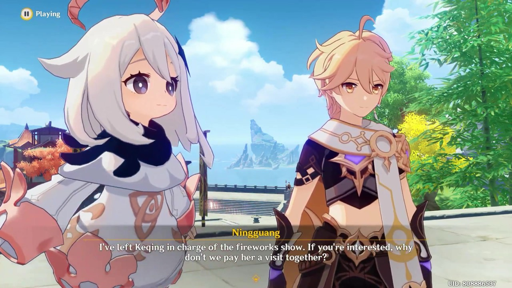

One real frame, one real model, unedited
That half-second of yours is the expensive part of building an AI, and there is no way to skip it. crowdmon is the machinery around your half-second — it turns recorded gameplay into still frames, makes a model take a rough pass at every one, and cuts a person's job down to yes, no, or nudge.

Paimon 0.20 Raiden Shogun 0.17 Paimon 0.11it is not. that is the Traveler, and the model has never been shown either character — it is working from the words "paimon" and "raiden shogun" alone. that took you about a second. the whole project is built around that second.
How the whole thing works
Paste a link to a gameplay video. Nothing else is asked of you.
A box at home pulls out stills and throws away the near-duplicates.
A model draws a box around anything it takes for a character, and names it.
Yes, no, or drag the box straight. Seconds each, not minutes.
Confirmed frames are packed into a dataset anyone could train on.
Why this is the hard part
I tried this in 2023 and abandoned it. That version had a perfectly good annotation tool where every box was drawn from scratch, which meant hour ten cost exactly what hour one cost. There is no finish line in a job shaped like that.
The fix is not a faster drawing tool. It is changing what the person is asked to do: checking someone else's homework is far cheaper than doing it. A model that guesses badly is still worth having, because rejecting a bad guess takes under a second — and a rejection is a label too.
So the model here is deliberately mediocre and deliberately swappable. Everything around it is the thing that was actually built.
Deliberate limits
What it is made of
Every part of this is either free or already running. The interesting constraint was never the model — it was building a pipeline that survives a home internet connection and a machine that reboots when it feels like it.